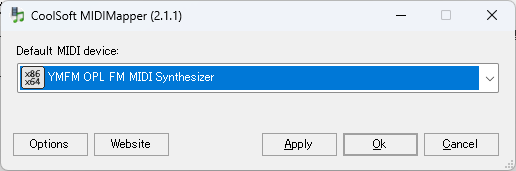

This is a port of ymfmidi, which implements ymfm, a Yamaha FM sound source emulator, as a MIDI player, to Windows.
The FM MIDI mentioned here refers to MIDI using the OPL3 chip found in old Sound Blaster cards and similar devices. Nowadays, high-quality MIDI sound sources using soundfonts are easily available, so FM MIDI cannot compete in terms of sound quality.
However, since FM sound sources have long disappeared from PCs, the unique sound of FM MIDI is actually a novel experience today. Although there are soundfonts that try to reproduce FM sounds, FM synthesis fundamentally differs from sample-based soundfonts. In other words, to recreate "that particular sound from back then," faithfully reproducing the FM synthesis mechanism itself is (probably) the best approach rather than relying on soundfonts.
Therefore, this software aims to emulate Yamaha's OPL-series FM sound chips and make FM sound sources available from Windows MIDI environments (midiIn/midiOut API).
The core is ymfm, but most of the main code comes from ymfmidi. Sampling conversion is also from others. Many thanks for these excellent programs.
Instrument definition files (*.wopl, etc.) can be created with an editor or you can use publicly available files. The bundled definition files with ymfmidi seem to come from DMXOPL. I personally find the GENMIDI(GS).wopl there quite good.

This software can receive and play back MIDI messages from MIDI IN, but cannot be selected directly as a MIDI output destination by other software. To select it as an output in other software, you need virtual MIDI cables such as loopMIDI.
To use loopMIDI, follow these steps:
If you have multiple MIDI IN devices, specify the MIDI device number explicitly with the //MIDIIN<number> option.
If you want to use it as the default MIDI output device, install CoolSoft MIDIMapper. After installation, use the MIDIMapper Configurator to specify the virtual MIDI port you created.
If you want to play sounds close to the Windows standard FM MIDI sound source, you need the instrument parameters used in the Windows standard Sound Blaster 16 driver. This data is included in FMSYNTH.BIN from the Windows NT4 DDK sample.
However, since these parameter definitions are originally included for driver development (DDK), redistribution for other purposes may not be appropriate. Therefore, FMSYNTH.BIN is not included with this software. Instead, the following methods are supported as alternatives.
Specify the FMSYNTH.BIN from the Sound Blaster 16 sample driver included in Windows NT4 DDK as the instrument definition file to load it.
(e.g.) ymfmidiwin //MIDIIN FMSYNTH.BIN
Some Windows NT4 Sound Blaster driver DLLs (e.g., sndblst.dll) contain data identical to FMSYNTH.BIN as a resource.
This software can load instrument data from such DLL resources if you specify the DLL file. It does not have to be sndblst.dll as long as it contains the equivalent FMSYNTH.BIN resource.
(e.g.) ymfmidiwin //MIDIIN sndblst.dll
Note: The drum sounds included in FMSYNTH.BIN depend on OPL rhythm sounds, which are not supported by the current ymfmidi. Therefore, drum sounds are loaded only from GENMIDI.op2. Please place GENMIDI.op2 in the same folder as ymfmidiwin.exe.